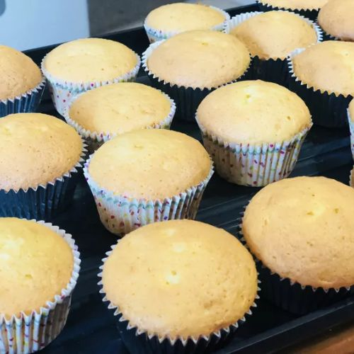
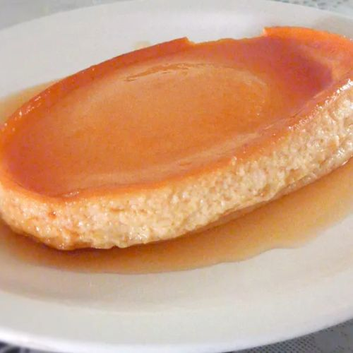

|  |
MAMON
- TOTAL TIME: 1 hour 10 minutes
- SERVINGS: 16
STEP #1: Oven should be heated to 325 degrees F already. Get cups for the muffin and grease.
STEP #2: In a large bowl, add flour, 1 cup sugar, baking powder, and salt, combining by stirring. Make a crater in the middle and add oil, egg yolks, orange peel, vanilla, orange juice, and water then mix using your hand. Set aside.
STEP #3: In a different bowl, beat egg whites and cream of tartar until it is foamy. Slowly, add 1/2 cup sugar then beat until soft peaks form. Egg whites should start to form soft mounds and NOT A SHARP PEAK.
STEP #4: Combine flour mixture and egg whites until incorporated. Pour batter in cups. Bake for about 40 minutes, then cool and serve.
-
Link to picture: tasty!
|
- 2 ½ cups all-purpose flour, and 1 cup white sugar
- 1 tablespoon baking powder, and 1 teaspoon salt
- ½ cup vegetable oil, and 8 egg yolks
- 2 tablespoons grated orange peel, and 1 teaspoon vanilla extract
- ⅓ cup orange juice, and ⅓ cup water
- 8 egg whites, ½ teaspoon cream of tartar, and ½ cup white sugar
|
|  |
LECHE FLAN
- TOTAL TIME: 6 hours 20 minutes
- SERVINGS: 12
STEP #1: Oven should be at a temperature of 375 degrees F already.
STEP #2: Add sugar and water together in a saucepan over medium-high heat. Do NOT stir, but let it boil. Swirl the pan occasionally until liquid is brown or 7 to 10 minutes. Reduce heat for 2-3 minutes then immediately put in a flan mold. Cover bottom surface.
STEP #3: In a large bowl, add evaporated milk, condensed milk, egg yolks, and vanilla extract then stir gently without bubbles or foam. Strain it.
STEP #4: In the oven rack, place a roasting pan for flan mold. Fold sheets of foil in strips. Ensure to hold them in place. Pour custard mixture into the molds, then add hot water to the roasting pan (NOT FULLY). Lastly, cover with aluminum foil.
STEP #5: Bake until firm. Remove pan from oven, remove flan mold from roasting pun using the strips. Cool for an hour and chill for at least 4 hours (or overnight for best effect)
STEP #6: Serve.
-
Link to picture: mhm!
|
FOR CARAMEL:
- 1 cup sugar
- ¾ cup water
FOR CUSTARD:
- 1 (14 ounce) can sweetened condensed milk
- 1 (12 ounce) can evaporated milk
- 12 egg yolks
- 1 tablespoon vanilla extract
|